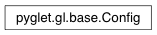

Config Class¶
-
class
Config(**kwargs)¶ Graphics configuration.
A Config stores the preferences for OpenGL attributes such as the number of auxilliary buffers, size of the colour and depth buffers, double buffering, stencilling, multi- and super-sampling, and so on.
Different platforms support a different set of attributes, so these are set with a string key and a value which is integer or boolean.
Variables: - double_buffer – Specify the presence of a back-buffer for every color buffer.
- stereo – Specify the presence of separate left and right buffer sets.
- buffer_size – Total bits per sample per color buffer.
- aux_buffers – The number of auxilliary color buffers.
- sample_buffers – The number of multisample buffers.
- samples – The number of samples per pixel, or 0 if there are no multisample buffers.
- red_size – Bits per sample per buffer devoted to the red component.
- green_size – Bits per sample per buffer devoted to the green component.
- blue_size – Bits per sample per buffer devoted to the blue component.
- alpha_size – Bits per sample per buffer devoted to the alpha component.
- depth_size – Bits per sample in the depth buffer.
- stencil_size – Bits per sample in the stencil buffer.
- accum_red_size – Bits per pixel devoted to the red component in the accumulation buffer.
- accum_green_size – Bits per pixel devoted to the green component in the accumulation buffer.
- accum_blue_size – Bits per pixel devoted to the blue component in the accumulation buffer.
- accum_alpha_size – Bits per pixel devoted to the alpha component in the accumulation buffer.
Attributes: